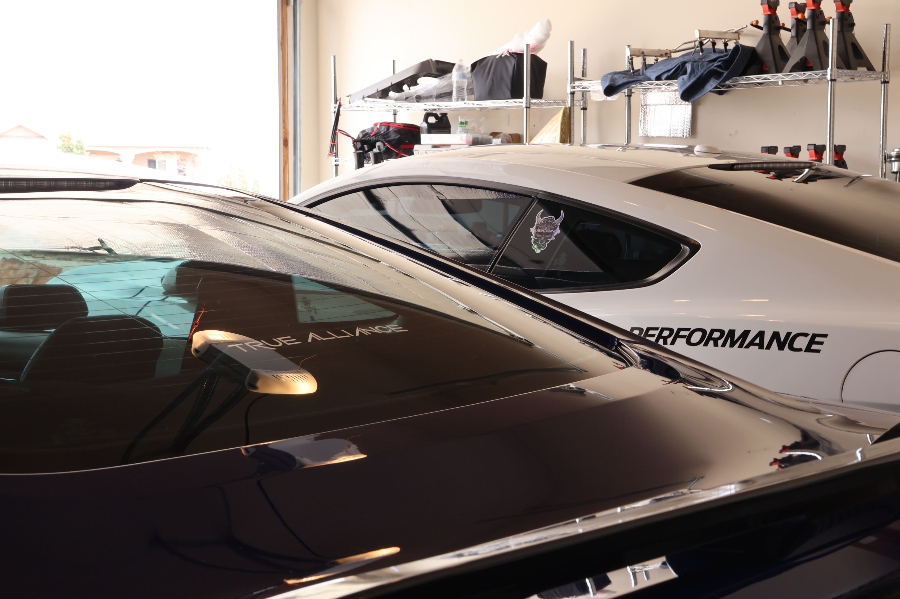

Brand and Event Design
True Alliance Project
This project focused on digital promotion, event branding, apparel concepts, and turning photography into branded digital compositions.

Purpose
The purpose was to create visuals that supported True Alliance’s identity and community presence. The work needed to feel strong, clean, and connected to automotive culture.
The banner direction used sacred colors, feathers, cars, community, and traditional healing as key visual ideas.




Process
- Gather provided files and brand assets.
- Research the event purpose and visual direction.
- Match color schemes to reinforce consistency.
- Revise concepts based on feedback.
- Prepare designs for digital posting or physical production.